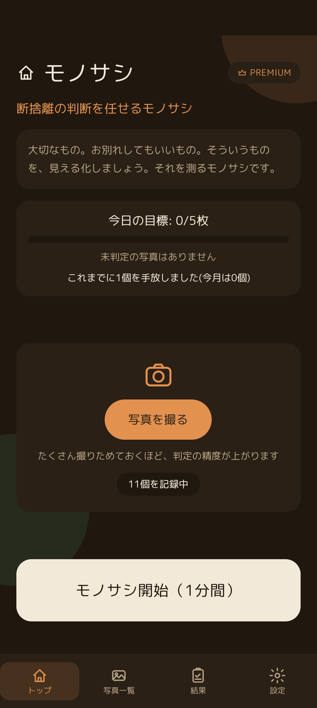

📖 はじめに
「片付けたいけれど、捨てる決心がつかない」「いつか使うかもと思って残してしまう」――そんな悩みを解決するために生まれたのが「モノサシ」です。
手放すか迷う持ち物の写真をスマートフォンでパシャリと撮影し、1回1分のスキマ時間に「まだ使う」「サヨナラでいいかも」など直感的にスワイプしていくだけ。何日か繰り返すうちに、あなたの本音が「必要」「不要」の確信度として自然にまとまっていきます。

目標進捗と記録中の写真数がひと目でわかり、1分間の集中スワイプを開始できるトップ画面
🎯 やりたいことから探す
迷う持ち物を撮って判定したい
カメラで写真を撮り、1分間のモノサシセッションで直感的にスワイプする手順
まずはサンプル画像で試したい
持ち物を撮る前に、お試し写真でスワイプ操作や判定の雰囲気を体験する方法
気持ちの推移グラフを見たい
モノサシを重ねるごとに「必要」「不要」へどう傾いていったかのグラフを確認
手放した数や方法を記録したい
処分を決めたものを「捨てた・売った・譲った」として手放し記録に残す方法
ホーム画面にウィジェットを置きたい
未判定の写真や処分候補をスマホのホーム画面でいつでも意識できるウィジェット設定
機種変更でデータを引き継ぎたい
暗号化バックアップファイルを作成し、新しい端末で安全に復元する手順
📚 機能別ガイド一覧
FEATURE 01
1. 写真撮影とモノサシ判定（スワイプ）
持ち物の撮影、1分間の判定タイマー、上下左右の4方向スワイプの意味と直感判断のコツを解説。まずはサンプルでお試しも可能です。
FEATURE 02
2. 写真一覧と判定の推移グラフ
登録した写真の一覧管理、タップで開く詳細ダイアログの「推移グラフ」、複数写真の選択・削除方法をわかりやすく紹介。
FEATURE 03
3. 判定結果と手放した記録
「必要」「不要」の2大区分と確信度に応じた丁寧なメッセージ、そして手放した実績（捨てた/売った/譲った）の記録・管理方法。
FEATURE 04
4. 設定・リマインド・ウィジェット
手放しリマインド通知、8種類の多彩なスキン（テーマカラー）、丸ゴシック等のフォント変更、暗号化バックアップ、ホーム画面ウィジェット。
❓ よくある質問（FAQ）
1日に何回もモノサシをやってもいいですか？
はい、何回でも行っていただけます。トップ画面には「今日の目標（例: 0/5枚）」が表示されていますが、目標達成後も気が向いたときに1分間のスワイプを繰り返すことで、より正確にあなたの気持ちを把握できるようになります。
スワイプの方向を間違えてしまった場合はどうすればいいですか？
モノサシは1回のスワイプだけで結果を固定せず、何日もかけて何度も出題される写真のスワイプ傾向から総合的に判断します。そのため、1回押し間違えてしまっても心配いりません。次に出題されたときに本来の方向へスワイプすれば自然と補正されます。
ダークモードやライトモードの切り替えはどう動きますか？
お使いのスマートフォンの端末設定（システム連動）に合わせて自動でライトモードとダークモードが切り替わります。さらに設定画面の「スキン」から、お好みのテーマカラー（ライト4種、ダーク4種）を自由に適用できます。
アプリ内に広告は表示されますか？
基本機能はすべて無料でご利用いただけます。より快適に集中して断捨離を進めたい方向けに、広告非表示などを備えた「PREMIUM」プランもご用意しています。